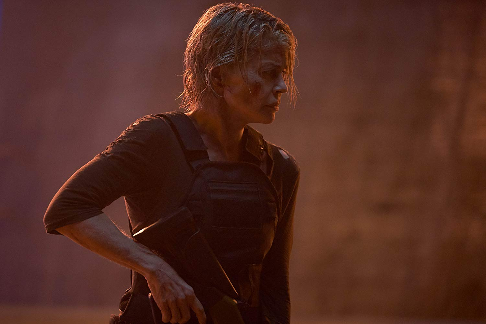
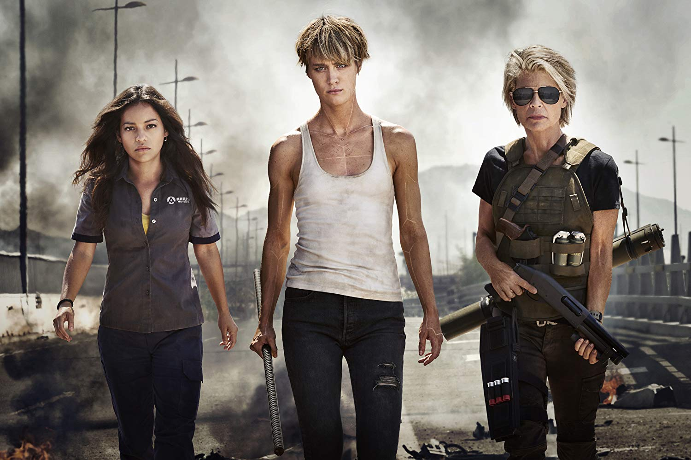
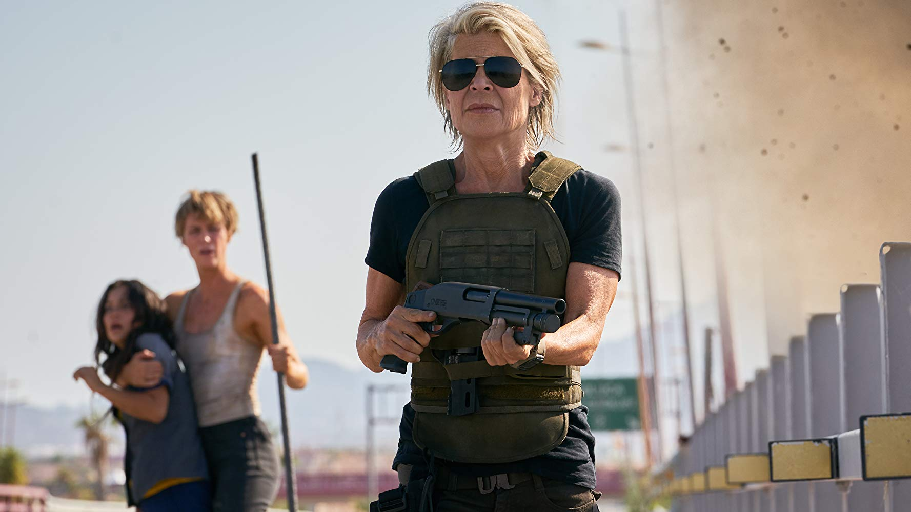

Plot Synopsis
The film opens with a video of Sarah Connor (Linda Hamilton) recounting her vision of Judgment Day to agents who are interrogating her. She grows increasingly enraged as she yells about how she knows when the world is going to end.
We then see Skynet Terminators ravaging a beach in the midst of an ongoing war. However, Sarah's voiceover states that she stopped this future from happening, and therefore prevented the rise of Skynet. She and her son John (Jude Collie) are living in Guatemala in 1998. As they are enjoying time together at a bar, a T-800 (Arnold Schwarzenegger) arrives and blasts John in the chest. Sarah shoots at him and tries to stop him, but she is too late, and John is gone. Sarah cradles her son's body in agony.
22 years later in Mexico, a couple watches as something teleports from the future. They find a young nude woman, Grace (Mackenzie Davis), and they attempt to take her to the hospital before authorities arrive to stop them. As they try to apprehend Grace, she wakes up and reveals she is enhanced as she fights the cops off and disables them. She then steals the boyfriend's clothes and car to head out into the city.
The next day, Dani Ramos (Natalia Reyes) wakes up her brother Diego (Diego Boneta). They live with their father Vicente (Enrique Arce), and the siblings work at a factory. They leave for work right before a more advanced Terminator, Rev-9 (Gabriel Luna), teleports to that day. He steals a woman's clothes and goes to the Ramos home to speak to Vicente, claiming to be a friend of "Daniella". Vicente notes that her friends call her Dani. Rev-9 then goes to the factory disguised as Vicente, while Grace is also there pretending to be a worker. Rev-9 almost catches Dani and Diego, but Grace catches him first. She shoots Rev-9, making Dani think her father has been shot, but Grace lets her know real quick that he is not her father. She takes the siblings and rushes out to escape Rev-9, who pursues them across the highway. As Grace attempts to fight him off, it's shown that Rev-9 can use his endoskeleton as a second body, making him nearly impossible to hurt. Rev-9 causes the heroes car to crash, with Diego being pinned inside the car. Grace says she can't save him, and he just pleads that she protect Dani. Grace pulls Dani out just as Rev-9 sends the truck crashing into the car, killing Diego. Before he can finish off Grace and Dani, Sarah arrives with an RPG and other explosives to hold the machine off long enough for her to get Grace and Dani out of there.
Grace tries to drive away with Dani, but she starts to grow weaker due to her metabolism not working right. This causes her to almost crash the car until Dani helps steer them to safety. She attempts to get away from Grace and go to the police until Grace warns her that the police won't help her, and Rev-9 will find her quicker that way. They run to get supplies and medicine and are found by Sarah again. She takes the ladies to a motel so that they can explain their situations. Sarah confirms to Dani that her father is dead, leaving her without any family. As Grace lies unconscious, we see a flashback of her as a soldier in combat during a future battle. Deadlier and more powerful Terminators are ravaging human soldiers, and Grace, while managing to put up a good fight, is severely injured, and so she volunteers herself for augmentations. Grace wakes up to find Sarah pointing a gun at her, but Grace turns the tables on her. With Dani listening, Grace explains her enhancements and that she came from the year 2042. Sarah explains her history with the Terminators and how she and John stopped Skynet, but it is clear that they didn't prevent the bad future from happening differently. All Sarah has is the drive to hunt Terminators while also drinking to block out the pain from losing John.
The three continue driving to get further from Rev-9. Grace says that there is a different corporation, Legion, manufacturing the new Terminators like Rev-9. Sarah mentions that she found the two of them because she receives messages with coordinates to find Terminators, all ending with "For John". The ladies end up going near the US-Mexico border as they get closer to the source of the messages. Meanwhile, Rev-9 tracks them after slaughtering a group of guards and hacking into a surveillance system.
The trio ride a train at night with other migrants. Dani asks Grace about her past, and she explains how things began to turn dangerous as a child once Legion rose to power. Within three days, the whole world was at war after the plan to contain Legion failed. As a child, Grace was on her own, running from Legion's drones and other human thugs until someone saved her. Sarah thinks this means that Dani is going to give birth to the future leader of the human resistance.
In the morning, the three meet with Dani's uncle Felipe (Tristan Ulloa) to help get them across the border, just as Rev-9 has already infiltrated a border patrol facility and killed off several employees. They travel through the day and start heading across the ocean to safety, but they are found by US agents and are caught. Grace manages to rip through her cuffs to protect Dani, but a plane that Rev-9 brought down crashes onto the scene. The ladies are detained, while Grace is brought to the medical center. She is revived and beats the guards before heading back to Dani and Sarah. However, Rev-9 is also there disguised as an agent. Once he spots the women, he proceeds to kill more guards. People begin running in a mass panic. The trio run outside to get onto a helicopter. Dani jumps out briefly to shoot at Rev-9 before he kills Sarah, but they manage to get away from him. Grace chastises Dani for putting herself at risk.
The three fly until they trace the location of the messages to a man named Carl. They arrive at Carl's home, only to discover it is the same T-800 that killed John. Sarah almost flies into a rage until Grace stops her. The T-800 reveals that he is living with a woman and they have a son together. After completing his objective, he remained without a purpose until he adapted to life as a human. He sent Sarah the messages to give HER a purpose. Sarah still remains disillusioned. She tells Dani about how she never took photographs of John, and now she is starting to forget his face. After getting everyone comfortable, the heroes start to think of a plan, but while Grace wants to hide Dani, she decides that she wants to fight so that nobody else has to die for her. She will bait herself to kill Rev-9. Carl joins the ladies, despite knowing he will not be coming back. Sarah also vows to kill him after they kill Rev-9, which Carl understands. He provides them with the weapons that they need to prepare themselves for combat training.
The team meets with an ally of Sarah's to receive a military grade EMP. Rev-9 finds them and begins to shoot at them. Carl shoots back while the team hijacks a van to run away from Rev-9. They make it to an aircraft but they lose the EMP in the process. They manage to shoot down Rev-9's chopper, but he flies onto the aircraft. The heroes fight it until Sarah and Dani manage to throw Rev-9 off by pushing the van onto him. On the plane, Grace reveals to Dani that she IS the future leader of the resistance. She was the one who saved Grace as a child, which prompted her to go back and protect Dani. By then, Dani grew into a strong leader that inspired her people to fight and not accept that future as their fate. Sarah realizes Dani is who John would have become, and it inspires her to fight back even more. Rev-9 then catches up to them and attacks the aircraft. The ladies board a van and parachute it down safely while Carl and Rev-9 crash near a power plant.
The ladies run through a facility, but Grace is severely weakened. Carl rejoins them to help get them through as Rev-9 is approaching. Dani decides to fight him there to set up their kill box. The team battles Rev-9 by trying to blast him and tear him apart, but he only continues to regenerate. Grace realizes the only way to really stop him is by using her power core. She has a goodbye with Dani before Carl takes the power core himself. He pins Rev-9 down and tells Sarah "For John" before driving the core into Rev-9's head, causing both him and Carl to fry up and be destroyed.
Dani later joins Sarah on their journey. They find a schoolyard where a child Grace is playing. Dani says she doesn't want Grace to go through the same ordeal again, so Sarah takes her to begin molding her into the leader she will one day become.